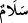

sadece yemek yedirmekle hizmete önem verme.
Şeyh Sa‘dî şöyle demiştir:
İşittim ki Rum memleketinin uzak bir bölgesinde
Temiz tabîatlı ârif ve âlim bir kimse vardı.
Ben ve birkaç gezgin,
Bu kimseyi görmek için gittik.
Her birimizin başını, gözünü ve elini öptü,
İzzet ü ikrâm ile kabul etti ve oturdu.
Adamın altınları, tarlaları, uşakları, malı mülkü olduğunu gördüm,
Fakat ne yazık ki meyvesiz ağaç gibiydi
Gelenleri tatlı dille güzel karşılayan bir kimseydi
Lakin mutfağının ocağı soğuk, tenceresi kaynamıyordu.
O, sabaha kadar ibâdet, tesbih ve tehlîl ile meşgul olup uyuyamadı
Biz ise açlıktan uyuyamadık.
Sabah olunca kemerini bağladı, kapımızı açtı
Aynı şekilde öpüp bize iltifat etmeye başladı.
İçimizde hoş tabîatlı nükteci biri vardı
O da bizimle yolculuktaydı.
O cimri kimseye şöyle dedi “bize bûseyi tashîf[21] ile ver
Fakîre “tûşe” “bûse” den daha iyidir.
İkram ve izzet ile pabucumu çevireceğine
Bana ekmek ver de pabucumu kafama vur.
25. Onlar İbrahim’in yanına girmişler, selam vermişlerdi. İbrahim de selamı almış,
içinden, «Bunlar, yabancılar» demişti.
“Selam demişlerdi.” Yâni “sana selamımız olsun” demişlerdi. İbrahim (a.s) da onlara
“Selam” yâni “selâmun aleykum” dedi. Dolayısıyla __WORD__ (selâmün) kelimesi, haberi
mahzuf olan mübtedâdır. Bu cümlede istinaf kasdıyla atıf vâvı terkedilmiştir. (Yâni yeni
bir cümlenin başladığını göstermek için atıf terkedilmiştir.) Sanki, “İbrahim onların
selamına karşılık olarak ne dedi?” gibi bir soru sorulmuş ve bu soruya, “O, «selam»
diyerek cevap verdi” yâni “onların selamından daha güzel bir selamla onları karşıladı”
şeklinde bir cevap verilmiştir. İbrahim’in selamının meleklerinkinden daha güzel
olduğunu şuradan anlıyoruz: Meleklerin selamı hudûsü ifâde eden fiil cümlesiyle,
İbrahim (a.s)’ın selâmı ise o selamın onların üzerine dâim ve sâbit kalmasının ifâdesi
olan bir isim cümlesiyle belirtilmiştir.